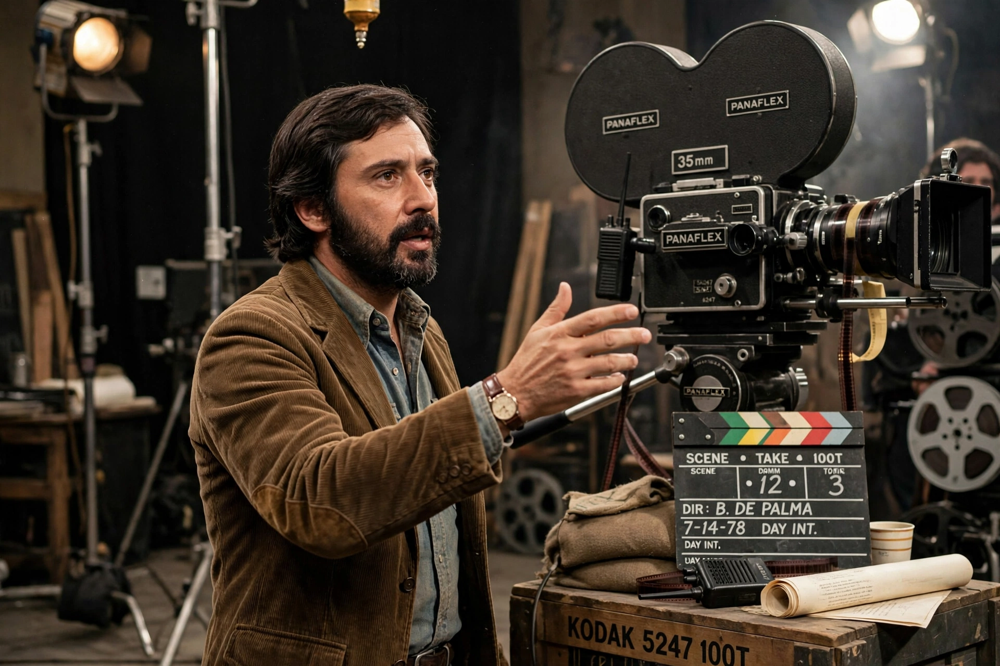

Brian Russell De Palma (born September 11, 1940) is an American film director and screenwriter. With a career spanning over 50 years, he is best known for psychological thrillers and crime films in the New Hollywood era, often noted for Hitchcockian suspense, split screens, and voyeurism themes.

Carrie (1976), Dressed to Kill (1980), Blow Out (1981), Scarface (1983), The Untouchables (1987), Casualties of War (1989), Carlito's Way (1993), Mission: Impossible (1996). Early films starred Robert De Niro.
Divisive for violence and eroticism, championed by critics like Pauline Kael. Subject of 2015 documentary De Palma. See New Hollywood.